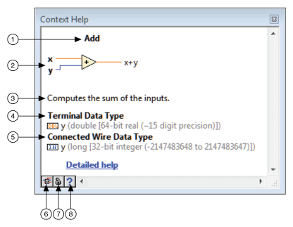

Select Help»Show Context Help or click the Show Context Help Window button on the toolbar, shown as follows, to display the Context Help window.
| Tip (Windows) You also can display the window by pressing the <Ctrl-H> keys. (macOS) Press the <Command-Shift-H> keys. (Linux) Press the <Alt-H> keys. |
Most objects in LabVIEW display context help information, including dialog box components and items in the Project Explorer window. Use the Context Help window, shown as follows, to learn basic information about LabVIEW objects as you move the cursor over each object.
The following image illustrates the components of the Context Help window.
|
 |
|
| 1 Object Name | 5 Connected Wire Data Type |
| 2 Image | 6 Show Optional Terminals and Full Path |
| 3 Description | 7 Lock |
| 4 Terminal Data Type | 8 Detailed help |
The following table lists the names and descriptions of the components in the Context Help window.
| Name | Description | |
|---|---|---|
| 1 | Object Name | Displays the name of the object. |
| 2 | Image | Displays images of VIs and functions, including the names of inputs and outputs for the VI or function. Lighter text indicates that the input or output is optional. A value in parentheses after the name of an input or output indicates that LabVIEW uses that value by default when you leave the terminal unwired. |
| 3 | Description | Displays a basic description of the object. |
| 4 | Terminal Data Type | Displays the data type of the terminal over which you move the cursor on the VI or function. If the terminal accepts multiple data types, the Terminal Data Types field describes the default data type for the terminal. |
| 5 | Connected Wire Data Type | Displays the data type of the wire connected to the terminal only if the terminal you move the cursor over has a coercion dot. You can match the Connected Wire Data Type and the Terminal Data Type to eliminate coercion dots. If the object is a control or indicator, the Context Help window displays the data type of the control or indicator. |
| 6 | Show Optional Terminals and Full Path | Displays the optional terminals of and the full path to a VI or function. |
| 7 | Lock | Locks the current contents of the Context Help window, which prevents the contents of the window from changing when you move the cursor over different objects. You also can (Windows) press the <Ctrl-Shift-L> keys. (macOS) Press the <Command-Shift-L> keys. (Linux) Press the <Alt-Shift-L> keys. |
| 8 | Detailed help | If a LabVIEW Help topic exists for the object, opens the topic to display more information about the object. |
The Context Help window automatically resizes to accommodate each object description. You also can resize the Context Help window manually to set its maximum size. When you next start LabVIEW, the window appears in the same position and has the same maximum size.